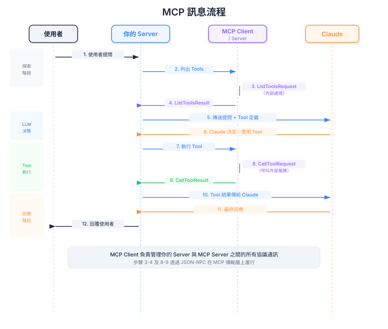

| Item | Detail |
|---|---|
| Exam Domain | D2 — Tool Design & MCP Integration (18%) |
| Task Statements | T2.2 實作 MCP client-server 通訊; T2.4 處理 tool discovery 和執行流程 |
| Source | introduction-to-model-context-protocol / 01-mcp-basics / Lesson 04 |
MCP client 就像產品內建的萬用遙控器，能自動探索並操控任何相容的智慧裝置（MCP server），無需針對每個裝置個別設定。

把你的 AI 產品想像成智慧家庭中樞。MCP client 就是內建在中樞裡的萬用遙控器。當你接上新的智慧裝置（MCP server）時，遙控器會自動：
這個遙控器的美妙之處在於，無論製造商是誰，它都能與任何相容裝置運作。不管是 Philips 燈泡還是 Nest 溫控器，同一個遙控器都能操控。
PM Takeaway
規劃產品的整合能力時，MCP client 是一次性的工程投資。一旦建好，新增服務整合就變成配置任務，而非開發專案。
MCP 通訊遵循一個簡單的兩步之舞，映射了組織中委派工作的方式：
在你的產品能使用任何服務之前，MCP client 會問每個 MCP server：「你提供什麼 tools？」Server 回應一份能力菜單。
這就像新員工到職第一天——他們跟每個部門主管坐下來問：「你的團隊提供什麼服務？你需要我提供什麼資訊才能辦事？」
當 Claude 決定需要某個 tool 時，MCP client 發送具體請求：「用這些輸入執行這個 tool。」Server 執行並回傳結果。
這就像發工作請求給那個部門：「請拉出亞太區 Q3 銷售報告。」部門做完工作，把報告送回來。
PM Takeaway
先探索再執行的模式意味著你的產品能動態適應可用的服務。如果明天加了一個新的 MCP server，Claude 會自動知道它的 tools，不需要改核心產品的任何程式碼。
理解完整流程幫助 PM 識別瓶頸、錯誤或使用者體驗問題可能出現的位置：
get_pull_requests 等 tools 存在get_pull_requests 是正確的 toolget_pull_requests，參數 state=open」兩個影響產品品質的關鍵交接點：
PM Takeaway
這個流程中的每一步都是潛在的失敗或延遲點。當使用者回報回應緩慢或不正確時，這個流程給你一個框架來識別問題出在哪——是 tool discovery、Claude 的決策、tool 執行，還是回應生成？
MCP client 可以透過三個管道與 MCP server 溝通。這是你的工程團隊會做的部署決策：
stdio（本機） — 就像同事坐在你旁邊。快速、簡單，但只在所有東西在同一台機器上時才能用。適合開發和測試。
HTTP（遠端） — 就像用 email 溝通。跨距離運作、可靠，但每封訊息有些額外開銷。適合需要遠端服務的生產環境。
WebSockets（持久） — 就像保持電話線開著。始終連接、即時來回，但需要維護連線。適合即時、高頻互動。
PM Takeaway
傳輸選擇影響延遲、可靠性和基礎設施成本。大多數生產環境產品，HTTP 是務實的預設選擇。如果你的使用案例需要 WebSockets 的即時優勢，請與工程團隊討論。
Domain 2 (18%) 的重點領域：
| Front | Back |
|---|---|
| MCP client 簡單來說做什麼？ | 它探索 MCP server 有哪些 tools 並路由執行請求——就像能與任何相容裝置運作的萬用遙控器。 |
| MCP 通訊的兩個階段是什麼？ | Discovery（問有哪些 tools）和 Execution（用特定輸入呼叫特定 tool）。 |
| 為什麼 agentic 流程需要兩次 Claude 呼叫？ | 第一次：Claude 收到查詢和 tool 選項，決定用哪個 tool。第二次：Claude 收到 tool 結果，生成最終回應。 |
| MCP 有哪三種傳輸選項？ | stdio（本機、快速）、HTTP（遠端、可靠）和 WebSockets（持久、即時）。 |
| MCP client 如何影響整合新服務的時間？ | Client 建好後，新增服務變成配置工作（連接新 MCP server），而非開發工作（寫客製化整合程式碼）。 |
| 12 步流程中兩個關鍵交接點是什麼？ | Tool 選擇準確度（取決於好的 tool 描述）和回應品質（取決於結構化的 tool 輸出）。 |
| 用商業語言描述「傳輸層無關性」是什麼？ | 你的產品可以連接本機、遠端或持久連線的 MCP server——全用同一套 client 程式碼，降低工程開銷。 |
| MCP client 在產品架構中位於哪裡？ | 在你的應用程式 server 內部，作為處理 MCP 協定通訊的特定元件。它不是整個應用程式。 |